Superior Spider-Man (2013 - 2014)
| Comic Book | Release Date | Cover |
|---|---|---|
| Superior Spider-Man #1 Hero or Menace? |  | |
| Superior Spider-Man #2 The Peter Principle | 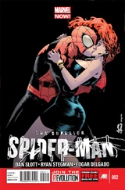 | |
| Superior Spider-Man #3 Everything You Know is Wrong | 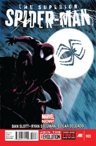 | |
| Superior Spider-Man #4 The Aggressive Approach | ||
| Superior Spider-Man #5 Emotional Triggers | ||
| Superior Spider-Man #6 Joking Hazard | 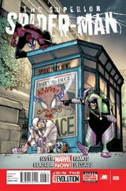 | |
| Superior Spider-Man #7 Troubled Mind, Part One: Right-Hand Man | 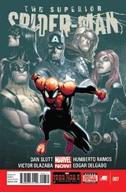 | |
| Superior Spider-Man #8 Troubled Mind, Part Two: Proof Positive | 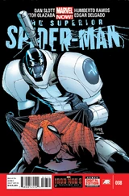 | |
| Superior Spider-Man #9 Troubled Mind, Part Three: Gray Matters | 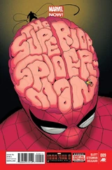 | |
| Superior Spider-Man #10 Independence Day | 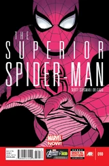 | |
| Superior Spider-Man #11 No Escape, Part One: A Lock for Every Key | 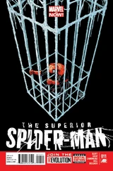 | |
| Superior Spider-Man #12 No Escape, Part Two: Lockdown | 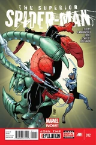 | |
| Superior Spider-Man #13 No Escape, Part Three: The Slayers and the Slain | 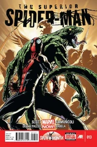 | |
| Superior Spider-Man #14 A Blind Eye | 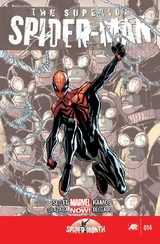 | |
| Superior Spider-Man #15 Run, Goblin, Run - Part 1: The Tinkerer's Apprentice | 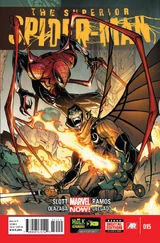 | |
| Superior Spider-Man #16 Run, Goblin, Run - Part 2: Goblin Season | 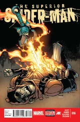 | |
| Superior Spider-Man #17 Let's Do the Time Warp Again | 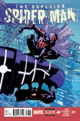 | |
| Superior Spider-Man #18 Smack to the Future | 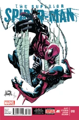 | |
| Superior Spider-Man #19 Necessary Evil - Part 3: Event Horizon | 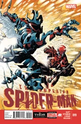 | |
| Superior Spider-Man #20 Still Standing | 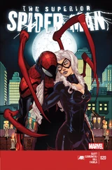 | |
| Superior Spider-Man #21 Lethal Ladies | 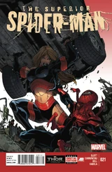 | |
| Superior Spider-Man #22 Darkest Hours Part One: Face To Face | 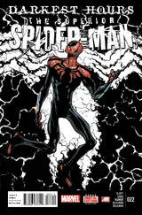 | |
| Superior Spider-Man #23 Darkest Hours Part Two: Complications | 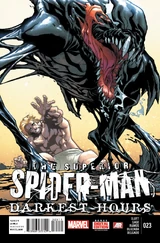 | |
| Superior Spider-Man #24 Darkest Hours Part Three: Dark Embrace | 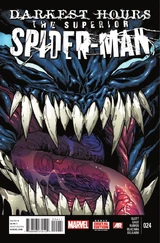 | |
| Superior Spider-Man #25 Darkest Hours Part Four: Before The Dawn | 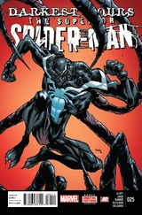 | |
| Superior Spider-Man #26 Goblin Nation Prelude: The Arena | 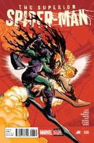 | |
| Superior Spider-Man #28 Goblin Nation: The Fall of Spider-Island | 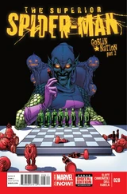 | |
| Superior Spider-Man #29 Goblin Nation: Legs Out From Under You | 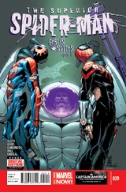 | |
| Superior Spider-Man #30 Goblin Nation: A Troubled Soul | 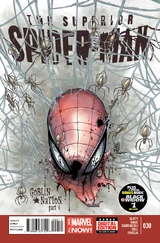 | |
| Superior Spider-Man #31 Goblin Nation (Part 5) | 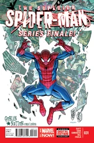 | |
| Superior Spider-Man #32 | 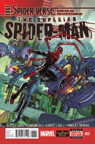 | |
| Superior Spider-Man #33 | 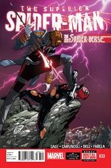 | |
| Superior Spider-Man #27.NOW Goblin Nation (Part One) | 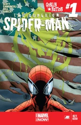 | |
| Superior Spider-Man #6AU Doomsday Scenario | 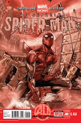 |